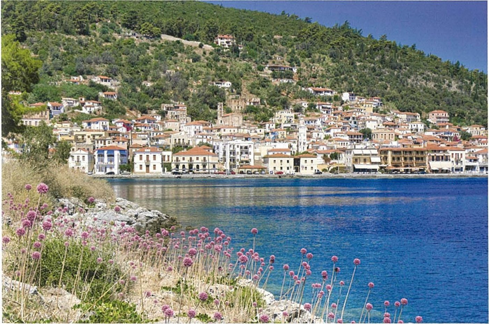
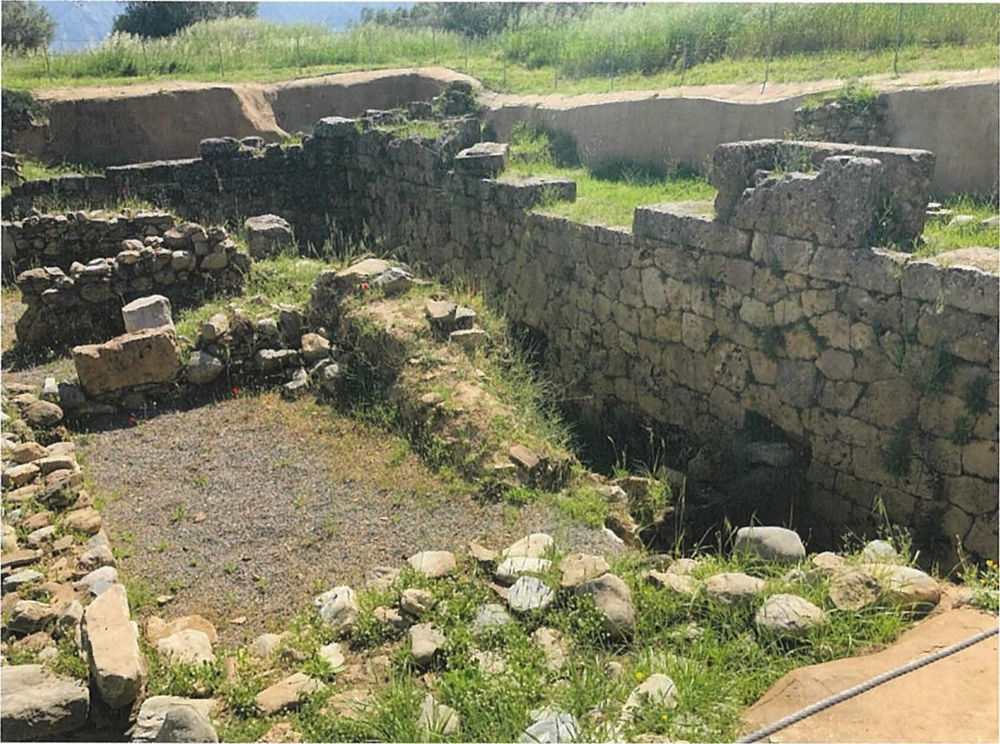

Spartan society to the Battle of Leuctra 371 BC · Lesson 7
Spartiates, inferiors and perioikoi
Who counted as a full citizen of Sparta, how could a man stop being one — and what did everyone else think of the citizens?
Year 12 Ancient History · Section II, Option G · Present with → or space · Read on a phone with R

Connect · 3 minutes · cold call
From the people who governed to the people who were governed
Five ephors, elected each year from the whole citizen body, watched the kings; ancient writers praised the result as a ‘mixed constitution’. But only full citizens could shout in the assembly or serve as ephor.
Who actually counted as a citizen — and how could you stop being one? Who were the free neighbours with no vote? And in about 399 BC, why did a young man named Cinadon plot against the citizens?
One key idea from Lesson 6, in one sentence.
Learning intentions and success criteria · 2 minutes
Today’s goals
- analyse how citizenship was gained and lost at Sparta
- account for the different perspectives of groups in Spartan society
- define homoioi, hypomeiones, neodamodeis, mothakes, tresantes and perioikoi accurately
- explain what Xenophon’s account of Cinadon’s conspiracy reveals about how non-citizens viewed the Spartiates — and why it may exaggerate
- write a “This Does That” sentence about a group’s perspective
A Spartiate is a full citizen; Lacedaemonians, the usual Greek word for ‘Spartans’, can include the perioikoi as well. The perioikoi were free men in their own towns; the helots were not free.
Note-making · today’s routine
How to structure your notes
questions and key terms
short phrases, arrows (→ led to), abbreviations (Sp. = Spartiates, per. = perioikoi)
- 1Listen and look firstDon’t copy while the slide is being explained.
- 2Write your own notes at each ✎ checkpointPhrases, not sentences. Arrows for cause and effect.
- 3Compare with the model notesThey appear one row at a time. Add what you missed in a second colour.
- 4Copy each cue question into the left columnLater, cover your notes and answer the cue questions from memory.
- 5Finish with a three-sentence summaryFive checkpoints: the social pyramid · the homoioi · the inferiors · the perioikoi · Cinadon’s conspiracy.
Key vocabulary
Words you will use today
| The citizen body | Meaning |
|---|---|
| Spartiate | a full citizen of Sparta: an adult man who met all the conditions of citizenship |
| homoioi | ‘equals’, perhaps best translated ‘peers’: the Spartiates’ name for themselves |
| syssitia | the common messes (one mess: a syssition): groups of citizens who ate regular evening meals together |
| hypomeiones | ‘men of lesser status’: probably Spartiates, or their descendants, who had lost full rights |
| tresantes | ‘tremblers’: men disgraced for cowardice in battle |
| oliganthropia | the shortage of Spartiate citizen manpower |
| Outside it | Meaning |
|---|---|
| mothakes | boys raised and educated with Spartiate sons; free or slaves? the sources disagree |
| neodamodeis | helots set free, probably to serve in the army: free, but not citizens |
| perioikoi | ‘those who live around (us)’: free people of the towns around Sparta, with no political rights there |
| helot | one of the subject population, tied to the land and worked for Spartiate masters (Lesson 8) |
| Lacedaemonians | the usual Greek word for ‘Spartans’; it can include the perioikoi |
Spelling: Cooley’s translations use Greek forms (Kinadon, Lakedaimonians, Lykourgos, Aristodamos). In your own writing use Cinadon, Lacedaemonians, Lycurgus, Aristodemus. The syllabus spells the free neighbours periokoi, as Cooley does in several places; most books use perioikoi. Both are correct.
1 · Reading the social pyramid · I do — build it, then question it
Spartan society in one picture?
1 · Reading the social pyramid · I do — what the picture hides
What a neat pyramid leaves out
Down: men who lost full rights. Up: helots freed as neodamodeis; Lysander, said by Phylarchus to have been a mothax, “became a citizen through his courage” (Cooley D30).
The ‘equals’ were not equal in wealth. Cooley: “Equality among Spartiates was, however, never more than an ideal.”
“a few thousand Spartiates” controlled “a subject population of at least a hundred thousand” (Cooley) — and the citizen body kept shrinking (section 2).
Spartiate women belonged to citizen families but had no political rights (Lessons 13–14).
The perioikoi were free but had no vote at Sparta, yet a single ladder must put them above or below the inferiors — which is why this diagram sets them beside it. No ancient source ranks the two.
The labels come from sources centuries apart, from Herodotus (c. 450s–420s BC) to Aelian (3rd century AD).
So what? A diagram is a starting point, not evidence. Use it to organise your notes, then test every label against a named source.
1 · Reading the social pyramid · We do — test the labels If time
Two textbook diagrams, tested against the sources
| Diagram | Label | The problem | Evidence |
|---|---|---|---|
| Hurley, Source 9 | “parthenai” | The Partheniai, misspelt. Aristotle says they were sent off to found Taras — dated c. 706 BC — so they are not a group in classical Sparta. | Aristotle, Politics 1306b (D26); Cooley H5–H6 |
| Hurley, Source 9 | “mothoces” | A misspelling of mothakes. | Phylarchus, Aelian (D30–D31) |
| Hurley, Source 9 | “Spartan citizen women” | Women had no political rights: say Spartiate women. | Cooley: “Full citizens of Sparta (adult males)” |
| Hurley, Source 9 | helots labelled as slaves | Too simple: helot conditions were “somewhat different from those of slaves in most other parts of Greece”. | Cooley, on the helots |
| Clarke & Garner, Fig 3.2 | perioikoi above the inferiors | No ancient source ranks them. The perioikoi were a separate, free population, “personally free, but politically their communities were subject to Sparta”. | Cooley, note on the perioikoi |
| Clarke & Garner, Fig 3.2 | “Inferiors (Spartiates who lost their citizenship)” | Leaves out the mothakes and neodamodeis, and drops the hedge: hypomeiones were “presumably descendants of homoioi who had lost their status”. | Cooley, note on E53b |
What Hurley gets right: the perioikoi sit outside the pyramid, and the hypomeiones and neodamodeis are named.
Notes checkpoint 1 of 5
Reading the social pyramid
Write your own notes first. Then compare, row by row, and add what you missed in a second colour.
2 · The homoioi · I do — earning and keeping citizenship
How to be — and stay — a Spartiate
- 1Be born to a Spartiate familyThe usual starting point — but not enough on its own.
- 2Complete the state educationLater writers call it the agoge (Lessons 9–10), followed by military training until the age of 30 (Cooley).
- 3Be elected to a mess (syssition)Election needed “a unanimous vote of approval among all members” (Cooley).
- 4Pay your monthly mess contributionBarley, wine, cheese and figs, plus a little money (Plutarch, Cooley D63).
- 5Own enough land, worked by helots, to pay itSpartiates could not trade, so land was the only income.
- 6Obey the laws and show courageCowards were disgraced (section 3).
Lose any of these — through poverty, failure or cowardice — and a man could lose his full rights. Citizenship was earned and kept, not simply inherited.
The procedure for electing a candidate for the mess is traditionally said to have been as follows: each of the members took a piece of soft bread in his hand … If the bread remained exactly as received, it meant “yes”; but a “no” vote was indicated by crushing the bread tightly in one’s fingers. [6] … even if only one such was found in the bowl, the would-be candidate was rejected …
Plutarch, Life of Lykourgos 12.5–6 (part) · written c. AD 100 · trans. B. Wilson · Cooley D63
Homoioi means ‘Equals’ or ‘Similars’; Cooley says it “is perhaps best translated as ‘Peers’, which reflects a sense of equality within an exclusive élite.”
2 · The homoioi · We do — an admirer and a critic agree
Losing one’s place among the homoioi
[7] In fact he made it an inescapable obligation to practise every form of political virtue. To all those who carried out those legal obligations to the full he gave full and equal political rights as a personal possession, without reference to any deficiencies of health or lack of financial resources. But if anyone failed to carry them out to the full, he made it clear that such a man was no longer to be regarded as one of the homoioi (‘Equals’).
Xenophon, Constitution of the Lakedaimonians 10.7 · probably written late 390s or 380s BC · “he” is Lycurgus · trans. B. Wilson · Cooley D51
For it ought to be the case that funds come from public revenue, just as in Crete: but with the Lakedaimonians everybody has to contribute, even those who are very poor and unable to afford this expense … For it is not easy for the very poor to participate, but the ancient mark of citizenship for them is that anyone who cannot pay this tax cannot belong.
Aristotle, Politics 2.9, 1271a26–37 (part) · written 330s–320s BC · trans. in Cooley D62
Admirer or critic — and when?
Xenophon admired Sparta (probably late 390s or 380s BC); Aristotle criticised it (330s–320s BC).
What could cost a man his place?
Failing his obligations (Xenophon); not paying for the common meals (Aristotle).
How does Aristotle challenge Xenophon?
Money did matter: the very poor “cannot belong”.
2 · The homoioi · I do — the system’s central weakness
Why poor Spartiates fell out
“Spartiates were not allowed to engage in any form of trade, which means that there was no way of supplementing insufficient income from property by other means.” Land “was passed down the generations through inheritance and dowries”, so in the end “some Spartan families failed to produce their contributions for the syssitia, and therefore lost their full citizen rights.”
“Equality among Spartiates was, however, never more than an ideal.” Some families grew rich enough to race chariots at the great games; others slid out of the citizen body.
2 · The homoioi · I do — the result in numbers
Fewer and fewer Spartiates, 480–370 BC
Describe the trend.
Down at every point: from about 8,000 in 480 BC to fewer than 1,000 in Aristotle’s figure — a shortage called oliganthropia.
Which figure is least secure?
418 BC: Cooley thinks Thucydides may have halved it. And 394 BC is not a count at all: Xenophon gives 6,000 Lacedaemonian hoplites, and Cooley says the Spartiates among them “may have been as low as 2,500 or 2,000”.
Battle deaths?
Not the main cause: casualties “were comparatively low by classical Greek standards” (Cooley). The decline “probably reflects a social-demographic change”.
2 · The homoioi · I do — occupations
A life without work — almost
Cooley: “a life dedicated to leisure pursuits, namely socializing, politics, exercise and hunting; and active contribution to the city’s defence.”
Xenophon: “in Sparta Lykourgos refused to allow free citizens to have anything to do with money making” (Cooley D53). No farming, crafts or trade.
Herodotus: “Their heralds and flute-players and meat-cooks adopt their father’s professions” (6.60, Cooley D24).
The helots farmed the land (Lesson 8); the perioikoi probably handled trade and crafts (section 4). The Spartiates’ way of life depended on people who were not citizens.
2 · The homoioi · We do — reading an object If time
A bronze Spartiate: how did a citizen want to be seen?
O — what can and cannot be said about who made it, and when?
It is ancient, but the textbook gives no date, find-spot or museum. Compare the 6th-century bronze warrior, 10 cm tall, found at Sparta, that Cooley prints as Figure 2 (British Museum 1929,1016.6).
V — what does it suggest about how a Spartiate wished to be seen?
As a citizen-soldier: helmeted, wrapped in his cloak, upright and still.
P — many small bronzes were offerings. Does it matter that we cannot prove this one was?
Yes: an offering would show how a man presented himself to a god. Without a find-spot we cannot be sure who saw it.
R and L — a real man or an ideal? What does it leave out?
More likely an ideal type: the face is hidden. It shows nothing of wealth, of the mess, or of the helots and perioikoi whose work supported him.
Notes checkpoint 2 of 5
The homoioi: earning and keeping citizenship
3 · The inferiors · We do — losing status
Falling out: hypomeiones and tresantes
Cooley: Xenophon’s account of Cinadon (section 5) is “the only use of the term”. They “were presumably descendants of homoioi who had lost their status: this might be through poverty (and being unable to contribute to the syssitia); through failure to complete their training or be elected to a mess; or for being convicted of misconduct.”
So they deprived them of their citizenship, even though some of them already held high positions … In due course, however, they were reinstated.
Thucydides, History of the Peloponnesian War 5.34.2 · written late 5th century BC · trans. B. Wilson · Cooley E52
But in Lakedaimon, everyone would be ashamed to share a meal with a coward in the same mess, or to wrestle with him at the gymnasium.
Xenophon, Constitution of the Lakedaimonians 9.4 · probably written late 390s or 380s BC · trans. B. Wilson · Cooley D96
When he got home to Lakedaimon, Aristodamos was greeted with shame and disgrace of the following kind: no Spartiate would give him a light for his fire or even speak to him … But afterwards, at the battle of Plataia, he redeemed himself and his disgrace was forgotten.
Herodotus, Histories 7.231 · written c. 450s–420s BC · trans. B. Wilson · Cooley F21
What do the stories share? Disgrace was social as well as legal — and not always for ever: Aristodemus redeemed himself, and the Sphacteria men were reinstated.
3 · The inferiors · We do — sources that disagree
Moving up? The mothakes
So the mothakes are free, though not actually Lakedaimonians, but still share exactly the same education. They say that Lysander who fought the Athenians at sea was one of these, though he became a citizen through his courage.
Phylarchos, FGrH 81 F43, in Athenaeus, Scholars at Dinner 6.102 · trans. in Cooley D30
Kallikratidas and Gylippos and Lysander were called mothakes at Lakedaimon. This was the name for slaves of the wealthy whom fathers sent along with their sons …
Aelian, Miscellaneous History 12.43 · trans. in Cooley D31
Why do the sources disagree?
Both are late — Phylarchus wrote in the 3rd century BC, Aelian some five centuries after him — and one calls mothakes free, the other slaves. Both name Lysander; Aelian adds Callicratidas and Gylippus.
Hodkinson, as cited by Cooley, concludes that the sources describe “a genuine status-type of the classical period: free-born Lakedaimonians from poor or disenfranchised families, adopted by a wealthy ‘patron’” — with the possibility, or even the certainty, of citizenship.
… says Tisamenus the seer and his brother “were the only people ever to become Spartiate citizens” (9.35, Cooley D25). That sits awkwardly with Lysander.
3 · The inferiors · We do — freed helots
Neodamodeis: free, but not citizens
The Lakedaimonians passed a decree declaring that the helots who had fought with Brasidas should be set free and allowed to live wherever they liked. Soon afterwards they settled them with other neodamodeis in Lepreon …
Thucydides, History of the Peloponnesian War 5.34.1 · trans. B. Wilson · Cooley E52
Lysander … persuaded Agesilaos to make an expedition to Asia if the Lakedaimonians would give him thirty Spartiates, two thousand freed helots, and a contingent of six thousand of the allies.
Xenophon, Hellenika 3.4.2 · trans. in Cooley E131
Free — and citizens?
Free, but not citizens. Cooley: they gained freedom and “certain rights”, “although they did not attain full citizen status”.
Why might Sparta free helots?
To fight. Cooley: the measure “may have been introduced to slow the decline of Spartiate numbers, especially in the army.”
Look at the numbers in Xenophon: thirty Spartiates, but two thousand freed helots.
Check for understanding · gesture vote · hold up 1–4 fingers
Helots who had been set free were called …
- 1hypomeiones
- 2tresantes
- 3neodamodeis
- 4mothakes
Neodamodeis: free, but not full citizens. Tresantes had fallen from the citizen body, and the hypomeiones probably had too; mothakes were raised alongside it.
Notes checkpoint 3 of 5
The inferiors: falling out of the citizen body
4 · The perioikoi · I do — the free neighbours
The perioikoi: free, but without a voice
Cooley: “They were personally free, but politically their communities were subject to Sparta, and the perioikoi did not enjoy any form of citizen rights in Sparta.”
At least 50 towns, almost all in Laconia, with a few in Messenia; their own land, and probably their own local government.
They “fought as hoplites alongside the Spartiates” by the time of the Persian Wars, and had to follow Sparta’s command in war — no foreign policy of their own.
They “probably handled most of the economic activities that were prohibited to Lakedaimonians”: probably overseas trade and fishing, iron, lead and building stone.

At Plataea, 479 BC: “Ten thousand Lakedaimonians held the right wing: of them, five thousand were Spartiates” (Herodotus 9.28, Cooley E84) — the rest presumably perioikoi.
4 · The perioikoi · We do — two snapshots, 42 years apart
Perioikoi in Spartan service — and in revolt
Eualas, a Spartiate, commanded the army; Deiniadas, a perioikos, the ships.
Thucydides, History of the Peloponnesian War 8.22.1 · written late 5th century BC · trans. B. Wilson · Cooley E56
Some of the perioikoi were there, appealing to the Thebans and insisting that they would revolt if they would only make an appearance in the countryside. They said that the perioikoi had just been summoned by the Spartiates but were unwilling to help them.
Xenophon, Hellenika 6.5.25 · a history covering 411–362 BC · trans. in Cooley E59
What two roles do the perioikoi play?
Trusted commander of a fleet (412 BC); would-be rebels inviting an invader (370 BC).
Does B show how many felt this way?
No: “Some of the perioikoi” told the Thebans what “the perioikoi” felt. Cooley: others “participated actively in the defence of Lakonia”.
What does our evidence lack?
Names and voices: Deiniadas and a spy, Phrynis, are “the only two perioikoi named in Thucydides” (Cooley).
4 · The perioikoi · We do — weigh the evidence
Were the perioikoi loyal?
| Evidence of loyalty | Evidence against |
|---|---|
| 479 BC: perioikoi presumably made up half the Lacedaemonians on the right wing at Plataea (Herodotus 9.28). | c. 464 BC: after the earthquake, the helots revolted “Together with the neighbouring perioikoi of Thouria and Aithaia” (Thucydides 1.101.2, Cooley E62). |
| 412 BC: Deiniadas, a perioikos, commanded Spartan ships (E56). | c. 399 BC: Cinadon claimed to speak for the perioikoi, among others (Xenophon, Cooley E53a). |
| 381 BC: “Many of the better sort of perioikoi volunteered” for a campaign (Xenophon, Hellenika 5.3.9, Cooley E57). | 370 BC: some perioikoi urged the invading Thebans on (E59) — though others helped to defend Laconia. |
Cartledge, as cited by Cooley, sees the perioikoi as a “territorial reserve against the helots”, essentially loyal; Cooley calls 464 BC “the exception before 370/69 BC”.
Mostly loyal: the exceptions came at moments of crisis — an earthquake, a conspiracy, a foreign invasion — and even then not all the perioikoi joined in.
Notes checkpoint 4 of 5
The perioikoi: free but without a voice
5 · The conspiracy of Cinadon · We do — supported reading (1 of 3)
c. 399 BC: an informer goes to the ephors
Within five days of the end of the sacrifice, someone reported a conspiracy to the ephors and that the leader of it was Kinadon. [5] He was young in appearance and strong in spirit, but not one of the equals (homoioi). When the ephors asked how he said the plan would be carried out, the informant said that Kinadon had taken him to the edge of the agora and told him to count how many Spartiates were in the agora. “And I,” he said, “counted the king, the ephors, the members of the gerousia, and about forty others, and asked ‘Why did you tell me to count them, Kinadon?’ He said, ‘Imagine that these are your enemies, and all the others are your allies – more than four thousand of them in the agora.’” … and out of all those who happened to be on the estates of the Spartiates, one enemy – the owner, but many allies on each estate.
Xenophon, Hellenika 3.3.4–5 (part) · Xenophon lived c. 430–c. 350 BC; the Hellenika covers 411–362 BC · trans. in Cooley E53a
Who was Cinadon?
Young and strong, but not one of the homoioi — probably one of the hypomeiones.
How many Spartiates did the informer count?
The king, the ephors, the gerousia and about forty others — about 75. Cooley adds them up: “gerousia (30) + 5 ephors + 40 against 4,000”.
What was Cinadon’s point?
Even in the city’s centre, citizens were a tiny minority — and on every estate there was “one enemy – the owner”.
5 · The conspiracy of Cinadon · We do — supported reading (2 of 3)
“Gladly eat them even raw”
[6] The ephors asked how many Kinadon said knew about the matter, he said that Kinadon said that amongst his group and amongst the leaders, those in the know were reliable but not very many; but what they said was that they knew on behalf of all, helots and neodamodeis, and the hypomeiones (‘men of lesser status’), and the periokoi. For amongst them, whenever a word was said about Spartiates, no one could hide the fact that they would gladly eat them even raw.
Xenophon, Hellenika 3.3.6 · trans. in Cooley E53a
Whose words are we reading?

Four non-citizen groups named side by side — and, Cooley notes, the only use of the word hypomeiones.
5 · The conspiracy of Cinadon · We do — the group table (3 of 3)
The four groups Cinadon named
| Group | Status | Obligations | Attitude to Spartiates | Evidence |
|---|---|---|---|---|
| helots | unfree subjects “with limited personal freedom” (Cooley), tied to the land | worked the Spartiates’ estates (Lesson 8) | Cinadon’s claim: they would “gladly eat them even raw” | on each estate “one enemy – the owner” (E53a) |
| neodamodeis | freed helots: free, but not full citizens | probably military service: 2,000 were asked for Agesilaus’ expedition to Asia, 396 BC | the same claim | Thucydides 5.34 (E52); Xenophon, Hell. 3.4.2 (E131) |
| hypomeiones | ‘men of lesser status’: probably descendants of homoioi who had lost their status | unknown — Cinadon “had previously done other such jobs for the ephors” | Cinadon’s own aim: “To be no one’s inferior in Lakedaimon” | Xenophon, Hell. 3.3.9, 3.3.11 (E53b) and Cooley’s note |
| perioikoi | personally free, in their own towns; no citizen rights at Sparta | followed Sparta’s command in war; fought as hoplites | the same claim — but many stayed loyal | E57 (381 BC volunteers); E59 (370 BC) |
Notice the attitude column: three of the four entries are one man’s claim, reported second-hand.
5 · The conspiracy of Cinadon · I do — what the response reveals
How the ephors reacted
[8] When they heard this, the ephors thought that the plots he described had been carefully laid and were very worried; they did not summon the so-called ‘little assembly’ but instead, summoning one of the elders here and another one there, they decided to dispatch Kinadon to Aulon with some other revolutionaries … [11] … Finally they asked him what his aim had been in doing this. He answered “To be no one’s inferior in Lakedaimon.” After this his hands were bound, his neck put in a halter and he and those with him were led round the city being flogged and tortured.
Xenophon, Hellenika 3.3.8, 3.3.11 (part) · trans. in Cooley E53b
What does the response reveal about the ephors’ power?
They acted fast and in secret: no ‘little assembly’, the elders consulted one by one, Cinadon sent off on a false errand to Aulon and arrested outside the city. We know nothing else about the ‘little assembly’ (Cooley).
What does his aim suggest?
That lesser status was felt keenly: the aim he gave was equal standing in Lacedaemon.
Aristotle used Cinadon as his example of strife “when a man of courage gets no share in office” (Politics 1306b, Cooley D26).
5 · The conspiracy of Cinadon · I do — reliability
Can we trust it? A view from below — at third hand
“Kinadon has every reason to exaggerate the discrepancy in numbers on each side (gerousia (30) + 5 ephors + 40 against 4,000), the extent to which the various ‘intermediate’ classes of hypomeiones, neodamodeis, perioikoi would identify with helots rather than Spartiates and even the extent of helot hatred for the Spartiates.”
“After all the Spartan state managed to remain stable until 370/69 BC” (Cooley).
Xenophon fought for King Agesilaus and had “reason to be grateful to Agesilaos and Sparta” (Cooley): a plot early in his friend’s reign, crushed by the ephors.
“Evidence from Xenophon demonstrates that perioikoi, helots and inferiors were unhappy with their position in the Spartan social system, revealed in the Kinadon conspiracy of 399 BC.”
Cooley says these are Cinadon’s claims, which he had “every reason to exaggerate”: write “Xenophon reports Cinadon’s claim that …”.
So: good evidence that Spartiates were a small minority even in the city (Cooley: “probably a small minority”), though Cinadon may have exaggerated the gap; good evidence for the groups that existed; weak, second-hand evidence for what those groups felt.
5 · The conspiracy of Cinadon · You do · 8 minutes · press K for the timer
Annotate Xenophon’s account: O, V, P, R, L
- O — Xenophon lived through these events and was a friend of King Agesilaus. How might this shape his account?
- V — Which groups does the source name, and what does it claim they felt?
- P — Whose words are we really reading? Trace the chain.
- R — Cooley says Cinadon had every reason to exaggerate. What, and why?
- L — Whose voices are missing?
Mark the groups in the margin of your notes copy: Sp Spartiates · In inferiors · Pe perioikoi · He helots. Own words, short phrases.
O: Xen., c. 430–c. 350 BC; alive at the time; friend of Agesilaus → plot crushed early in his reign · V: names helots, neodamodeis, hypomeiones, perioikoi; count ≈ 75 Sp. v. 4,000+; claims hatred · P: Cinadon → informer → ephors → Xen.: a conspirator’s claims, not the groups’ own words · R: Cinadon wants allies, so inflates numbers + hatred (Cooley); state stable to 370/69 BC · L: no helot, perioikos or neodamodes speaks; no women
5 · The conspiracy of Cinadon · I do — modelling the sentence
A “This Does That” sentence
The informer’s count of about seventy-five Spartiates — the king, the ephors, the elders and ‘about forty others’ — against Cinadon’s ‘more than four thousand’ others in the agora suggests how small a minority full citizens were, even if Cinadon exaggerated, and reveals that those excluded could be imagined as a resentful majority.
reveals · suggests · exposes · reinforces · undermines · conveys
Not “about forty Spartiates”: about forty others, on top of the king, the ephors and the gerousia.
Check for understanding · gesture vote
“Cinadon’s conspiracy proves that the non-citizens hated the Spartiates.”
Agree
Partly
Disagree
Justify your vote with one piece of evidence — and say who is speaking in it.
5 · The conspiracy of Cinadon · You do · 19 minutes · press K for the timer
What does the conspiracy of Cinadon reveal about Spartan social structure c. 399 BC?
- Judge — a qualified answer in your first sentence
- Evidence — the groups Cinadon names and the count in the agora, with provenance
- Analyse — at least one “This Does That” sentence
- Evaluate — whose words are these, and why might they exaggerate?
- Resolve — your refined judgement
How did Spartiates represent themselves? Use the bronze Spartiate from section 2.
Stuck? Start: “The conspiracy of Cinadon reveals a society in which …”
Notes checkpoint 5 of 5
The conspiracy of Cinadon
Finish your notes
Summary: three sentences
- How was full citizenship kept — and lost?
- Who stood below or beside the Spartiates?
- What does Cinadon’s conspiracy show, and how far can we trust it?
The Spartiates, or homoioi, were a small élite of adult male citizens who kept full rights only by completing the state education, winning election to a mess and paying a monthly contribution, so poverty or cowardice could cost a man his status, and their numbers fell from about 8,000 in 480 BC to about 1,500 by 371 BC. Below or beside them stood the ‘inferiors’ (hypomeiones, tresantes, mothakes and neodamodeis) and the perioikoi, free Lacedaemonians in their own towns with no political rights at Sparta. Cinadon’s conspiracy of c. 399 BC suggests how small a minority the Spartiates were, though its numbers and its picture of hatred are a conspirator’s claims, which he had every reason to exaggerate.
6 · Answering HSC questions
An ‘explain’ question on today’s lesson
25 marks, about 45 minutes — about 1.8 minutes a mark. 6 marks ≈ 11 minutes.
NESA: “Relate cause and effect. Make the relationships between things evident. Provide why and/or how.”
No HSC question from 2019 to 2025 has asked about this lesson alone. The closest, 2024 Q11(d) on Spartan social structure (12 marks), is taught in Lesson 8, after the helots.
So today’s question is HSC-style, written for this lesson: we take it apart, you write for 11 minutes, then you mark it against NESA’s 6-mark criteria and an annotated model.
HSC-style, written for this lesson · Section II · 6 marks
Explain how full citizenship was gained and lost in Sparta during this period.
Take it apart together, write it yourself, then check it against NESA’s criteria and a model.
HSC-style question · We do — deconstruct it with the NESA glossary
What the question is really asking
“Relate cause and effect … Provide why and/or how.” Not a list of rules: how each step made a man a citizen, and why men fell out.
Both halves. Gained: birth, education, mess election, contribution. Lost: poverty, cowardice, failure, misconduct — with the terms homoioi, syssition, hypomeiones.
From the archaic period to 371 BC — so the effect over time matters: a shrinking citizen body.
About 11 minutes · a judgement first · three or four causes, each linked to its effect · two or three named sources · about 150–200 words · no long introduction.
HSC-style question · You do · 11 minutes · press K for the timer
Explain how full citizenship was gained and lost in Sparta during this period. (6 marks)
- a judgement in your first sentence that covers both halves
- how citizenship was gained, step by step
- how it was lost — and why poorer men fell out
- named sources: Plutarch, Xenophon, Aristotle, Herodotus, Thucydides
- about 150–200 words
Start: “Full citizenship in Sparta depended less on birth than on …”
HSC-style question · how a 6-mark ‘explain’ question is marked
What the markers reward
| Marks | NESA’s criteria for a 6-mark part (b), 2025 |
|---|---|
| 6 | Provides an informed explanation relevant to the question · Communicates effectively using appropriate historical terms and concepts |
| 5 | Provides an explanation relevant to the question · Communicates using appropriate historical terms and concepts |
| 4 | Provides some explanation relevant to the question · Communicates using some historical terms and concepts |
| 2–3 | Provides some information relevant to the question · May use some historical terms and/or concepts |
| 1 | Makes a general statement(s) relevant to the question |
use historical terms and concepts, such as spartiate, perioikoi and helots to demonstrate understanding of the Spartan social structure (d).
focusing on the specific wording of the question(s) to explain rather than describe (b,c)providing appropriate depth in responses, guided by the mark value of each part of the question
Sources: NESA, 2025 HSC Ancient History Marking Guidelines, Section II part (b) (the criteria for 2025 Q11(b), “Explain how the Spartans controlled the helots”); NESA, 2024 marking feedback for Question 11 (the parts are in brackets). Quoted exactly; applied here to a question written for this lesson.
HSC-style question · Check your answer — a model written for this lesson
Judgement, how it was gained, how it was lost, the result
Model written for this lesson · 205 words, about 11 minutes
Marker’s margin
Even sharper: add Lysander, said by Phylarchus to have been a mothax, who “became a citizen through his courage”.
HSC-style question · three answers that fall short
Why answers drop marks
To be a Spartan citizen you had to do the agoge, join a mess and pay food every month. You lost it if you were a coward or poor.
Accurate information, but no explanation: no sources, few terms, and nothing on why poor men fell out.
Citizenship was gained through the state education and election to a mess, where one vote against you meant rejection, as Plutarch describes …
Some real explanation of gaining citizenship — but losing it, the other half of the question, is missing.
Spartiates who lost their citizenship became perioikoi or helots and had to work the land.
No source says so. Men who lost full rights were probably the hypomeiones; the perioikoi were a separate free people in their own towns.
Written for this lesson to show the marking criteria — not real student answers.
HSC-style question · Self-mark
Mark your own answer
Fewer than five ticks? Add the missing move in a second colour.
Circle every “because”, “so” and “which meant”. An explanation needs at least three.
Outline the position of the perioikoi in Spartan society during this period. (4 marks)
What does the conspiracy of Cinadon reveal about Spartan society during this period? (8 marks)
Practice and review · 1 of 6 · sequencing · written for this lesson
Put these in order, earliest first — and say what each shows about status
- AAn informer tells the ephors of Cinadon’s plot
- BDeiniadas, a perioikos, commands Spartan ships
- CDemaratus tells Xerxes that Sparta has “about eight thousand men”
- DSome perioikoi urge the Thebans to invade Laconia
- EThe perioikoi of Thouria and Aithaia join the helots on Mount Ithome
- FThe Spartiates who surrendered on Sphacteria lose their citizenship
- GAgesilaus’ expedition to Asia is to include two thousand freed helots
- HAt Plataea, 5,000 of the 10,000 Lacedaemonians on the right wing are Spartiates
- C (480 BC) — Herodotus 7.234 (F23): the highest figure in Cooley’s table.
- H (479 BC) — Herodotus 9.28 (E84): only half the Lacedaemonians were Spartiates; the rest were presumably perioikoi.
- E (c. 464 BC) — Thucydides 1.101 (E62): the perioikic exception before 370/69 BC.
- F (421 BC) — Thucydides 5.34 (E52): citizenship lost — and later restored.
- B (412 BC) — Thucydides 8.22 (E56): a perioikos trusted with a command.
- A (c. 399 BC) — Xenophon, Hellenika 3.3 (E53a–b): the four non-citizen groups named.
- G (396 BC) — Hellenika 3.4.2 (E131): freed helots as soldiers.
- D (370 BC) — Hellenika 6.5.25 (E59): some perioikoi turn against Sparta after Leuctra.
Practice and review · 2 of 6 · true, false, justify · written for this lesson
True or false? Justify with a source
- 1The perioikoi had full citizen rights at Sparta. False — they “did not enjoy any form of citizen rights in Sparta” (Cooley), though they were personally free.
- 2Aristotle says a man who could not pay his mess contribution could not belong. True — “anyone who cannot pay this tax cannot belong” (Politics 1271a, D62).
- 3A candidate for a mess needed only a majority of the votes. False — in Plutarch’s account one crushed piece of bread rejected him (D63); Cooley: “a unanimous vote of approval among all members”.
- 4The informer counted about forty Spartiates in the agora. False — “the king, the ephors, the members of the gerousia, and about forty others”: about 75 (E53a).
- 5The Spartiates who surrendered on Sphacteria lost their citizenship for ever. False — “In due course, however, they were reinstated” (Thucydides 5.34, E52).
- 6Neodamodeis were freed helots who became full citizens. False — free, but “they did not attain full citizen status” (Cooley, note on E53b).
- 7Xenophon’s account of Cinadon is the only place the word hypomeiones is used. True — Cooley: “this is the only use of the term” (note on E53b).
- 8All the perioikoi supported the Theban invasion of 370 BC. False — “Some of the perioikoi” appealed to the Thebans (E59); others “participated actively in the defence of Lakonia” (Cooley).
Practice and review · 3 of 6 · cloze · Chapter 6 Activity C
Fill the gaps
- Full Spartan citizens called themselves the homoioi.
- Xenophon calls the men of lesser status the hypomeiones.
- Helots set free, probably to serve in the army, were called neodamodeis.
- Boys of poorer families raised alongside Spartiate sons were called mothakes.
- The free inhabitants of the towns around Sparta were the perioikoi.
- Sparta’s chief naval base, a perioikic town, was Gytheion.
- Tyrtaeus compares the conquered Messenians to asses under heavy burdens. (Lesson 8)
- Thucydides says most helots descended from the original people of Messenia. (Lesson 8)
Practice and review · 4 of 6 · write an analytical paragraph · Chapter 6 Activity D
What does the conspiracy of Cinadon reveal about Spartan social structure c. 399 BC?
The conspiracy of Cinadon reveals a small citizen élite ruling a much larger, divided population, though it is weaker evidence for how that population felt. Xenophon’s informer counted only the king, the ephors, the gerousia and ‘about forty others’ in the agora, some seventy-five Spartiates, against ‘more than four thousand’ others, and Cinadon claimed to speak for ‘helots and neodamodeis, and the hypomeiones’ and the perioikoi. This count suggests how small a minority the citizens were by c. 399 BC, even allowing for Cinadon’s exaggeration, and the list shows several distinct groups between the Spartiates and the helots. Cinadon himself was ‘not one of the equals’ and wanted ‘To be no one’s inferior in Lakedaimon’, which suggests how keenly lesser status was felt. Yet these are a conspirator’s claims, passed through an informer and the ephors to Xenophon, a friend of King Agesilaus; Cooley warns that Cinadon ‘has every reason to exaggerate’, and the state stayed stable until 370/69 BC. The passage is therefore good evidence for the groups in Sparta’s social structure and for the citizens being a minority, but only second-hand evidence for its perspectives.
Practice and review · 5 of 6 · extended response · HSC-style, written for this lesson
To what extent were the Spartiates a closed and shrinking élite in this period? (15 marks)
Use evidence from relevant sources. Plan it in four moves:
- Thesis in your first sentence — for example: closed in principle and shrinking in fact, but with some movement in and out.
- Closed: the conditions of citizenship (Xenophon D51, Aristotle D62, Plutarch D63); Herodotus’ “only people ever” (D25); the hypomeiones and Cinadon (E53a–b).
- Shrinking: Cooley’s table (D29) with its caveats; Aristotle’s “not even one thousand” (D28); why poorer men dropped out.
- But: mothakes such as Lysander (D30, D31); neodamodeis free but not citizens (E52, E131); the Sphacteria men reinstated (E52); loyal perioikoi (E57) — and the state stable until 370/69 BC. Weigh the witnesses: Xenophon the admirer, Aristotle the critic, Cinadon the conspirator.
Practice and review · 6 of 6 · short review · written for this lesson
Review: Spartiates, inferiors and perioikoi
- Why might ‘peers’ be a better translation of homoioi than ‘equals’? The homoioi were equal only as members of “an exclusive élite” (Cooley); in wealth they were not equal.
- Name two things a Spartiate had to do to keep his full rights. Any two: complete the state education; be elected to a mess; pay the monthly contribution; show courage and obey the laws.
- Why could a poor Spartiate not escape losing his status? He was not allowed to trade, so if his land could not cover his mess contribution he had no other income.
- What does hypomeiones mean, and why must you say “probably” when defining them? ‘Men of lesser status’. The word is used only once, and no source explains who they were: Cooley says they were “presumably descendants of homoioi who had lost their status”.
- Give one piece of evidence that a lost status could be regained. The Sphacteria men “were reinstated” (Thucydides 5.34); Aristodemus “redeemed himself” at Plataea (Herodotus 7.231).
- In what ways were the perioikoi free, and in what ways subject to Sparta? Free: their own towns, land and probably local government. Subject: no citizen rights at Sparta, no foreign policy, Sparta’s command in war.
- How many Spartiates did the informer count, and why might Cinadon want the number to look small? About 75 (king, ephors, gerousia, about forty others) against more than 4,000: a small enemy makes a revolt look easy and attracts allies.
- Why is Xenophon’s account second-hand evidence for what non-citizens felt? It reports Cinadon’s claims, as told by an informer to the ephors and written down by Xenophon; no helot, perioikos or freed helot speaks.
Exit ticket · 6 minutes · before you leave
Two answers
Define two of: homoioi · hypomeiones · neodamodeis · perioikoi.
Name one way a Spartiate could lose his full citizenship.
Next lesson: the helots — the base of the pyramid — and why the sources describe them so differently.
Sources and credits
Where everything comes from
Quoted from the translations in M. G. L. Cooley (ed.), Sparta, LACTOR Sourcebooks in Ancient History 21, 2nd edn (Cambridge University Press, 2023): Xenophon, Constitution of the Lakedaimonians 7.2, 9.4 and 10.7 (D53, D96, D51, trans. B. Wilson) and Hellenika 3.3.4–11, 3.4.2, 5.3.9 and 6.5.25 (E53a–b, E131, E57, E59); Aristotle, Politics 1270a, 1271a26–37 and 1306b (D28, D62, D26); Plutarch, Life of Lykourgos 12 and 21 (D63, D97, trans. B. Wilson); Herodotus 6.60, 7.231, 7.234, 9.28 and 9.35 (D24, F21, F23, E84, D25, trans. B. Wilson); Thucydides 1.101.2, 5.34 and 8.22.1 (E62, E52, E56, trans. B. Wilson); Phylarchos, FGrH 81 F43, in Athenaeus (D30); Aelian, Miscellaneous History 12.43 (D31); Antiochus and Ephorus, in Strabo, Geography 6.3.2–3 (H5–H6). Cooley’s introductions and notes: social structure, the Spartiates, oliganthropia and his table of Spartiate numbers (D29), the mothakes, the perioikoi, the helots, wealth and property, the common meals, the assembly, the ancient authors, and his notes on E52–E56, E101 and E53b — including S. Hodkinson, Property and Wealth in Classical Sparta (2000), and P. Cartledge, Sparta and Lakonia, as cited there.
- A bronze figure of a Spartiate wrapped in a cloak and wearing a crested helmet — an ancient artefact; the textbook gives no date, find-spot or museum — Bradley, Fig 3.9
- Modern Gytheio, on the site of ancient Gytheion: a perioikic town and Sparta’s chief naval base — Clarke & Garner, Fig 6.3
- Footings and walls identified as part of Sparta’s agora, where Cinadon told the informer to count the Spartiates (the agora’s exact site is disputed) — Clarke & Garner, Fig 1.6
Books: P. Bradley, The Ancient World Transformed (Cambridge University Press, 2014); Clarke & Garner, Spartan society textbook (school copy).
Textbook images are reproduced for teaching, with the source given under each one. Drawn for this lesson: Spartan society as a stepped pyramid (replacing Hurley et al., Antiquity 2, Source 9 and Clarke & Garner, Fig 3.2, labels corrected from Cooley); Spartiate numbers (Cooley’s table, D29); the group table (Xenophon, Hellenika 3.3.6).
Criteria: NSW Education Standards Authority, 2025 HSC Ancient History Marking Guidelines (Section II part (b)); 2024 marking guidelines (Question 11(d), “answers could include”) and 2024 marking feedback for Question 11. © NESA. NESA glossary of key words (“explain”). The 6-mark question, the models and the practice questions were written for this lesson.